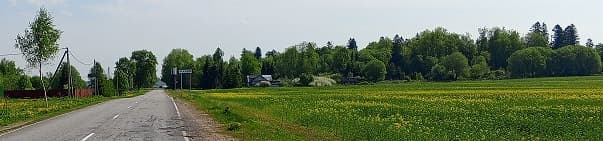
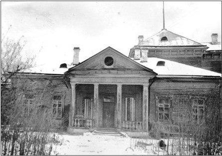
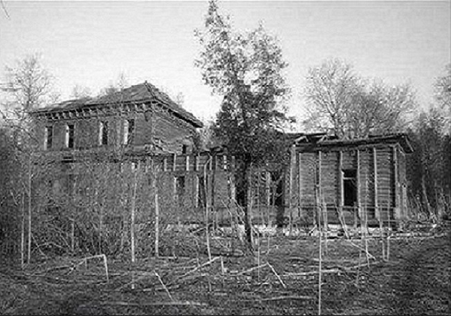
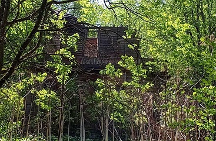

Населенный пункт удивляет своим построением. Если везде дома расположены вдоль дороги, то тут поперек. Зона дороги между домами порядка 300 метров, остальные построены за ними в обе стороны.
Имение последовательно принадлежало нескольким помещикам. Самая хозяйственная из них Елена Алексеевна Сверчкова (1759-1841), а после ее смерти Варвара Александровна Сверчкова (1811-1893). Ее вывороченное надгробие до недавнего времени валялось на кладбище в Раскулицах.
До 1917 года состояние имения было роскошно и ухоженно: с примыкающим парком, оранжереями и цветниками.
С приходом новой власти в усадьбе была организована больница с поликлинникой. По воспоминаниям очевидцев, и здание было прилично и персонал достойный. Мне встречались люди, которые тут родились.
Шло время, у чиновников менялись приоритеты и больницу закрыли.
Демонтировать ненужное здание труда себе не дали, предоставили эту задачу ветрам, дождям, снегу, огню и времени.
На сегодня мощное здание превратилось в отвратительную помойку. Остается удивляться как до него пожар не добрался.
Удивительного тут не много: - есть хозяин с именем и фамилией - стоит дом, а когда имя хозяина "народ" - превращается в руины. От советской власти ожидать другого наивно, она бездушна.
Почему сегодняшние чиновники безразличны?

">

Для этой больницы средств и желания сохранить не нашлось.